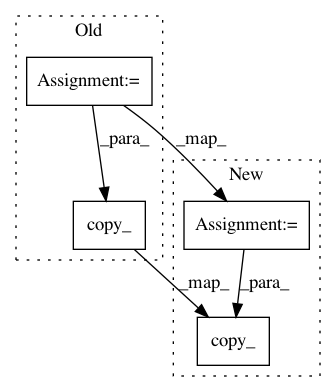

50e7614b277b05a84edbc98b6feb5d734e993223,models.py,Darknet,load_weights,#Darknet#,181
Before Change
bn_running_var = torch.from_numpy(weights[ptr: ptr + num_bn_biases])
ptr += num_bn_biases
// Cast the loaded weights into dims of model weights.
bn_biases = bn_biases.view_as(bn_layer.bias.data)
bn_weights = bn_weights.view_as(bn_layer.weight.data)
bn_running_mean = bn_running_mean.view_as(bn_layer.running_mean)
bn_running_var = bn_running_var.view_as(bn_layer.running_var)
// Copy the data to model
bn_layer.bias.data.copy_(bn_biases)
bn_layer.weight.data.copy_(bn_weights)
bn_layer.running_mean.copy_(bn_running_mean)
bn_layer.running_var.copy_(bn_running_var)
else:
After Change
// Number of biases
num_b = bn_layer.bias.numel()
// Bias
bn_b = torch.from_numpy(weights[ptr:ptr + num_b]).view_as(bn_layer.bias)
bn_layer.bias.data.copy_(bn_b)
ptr += num_b
// Weight
bn_w = torch.from_numpy(weights[ptr:ptr + num_b]).view_as(bn_layer.weight)
bn_layer.weight.data.copy_(bn_w)
In pattern: SUPERPATTERN
Frequency: 3
Non-data size: 4
Instances
Project Name: eriklindernoren/PyTorch-YOLOv3
Commit Name: 50e7614b277b05a84edbc98b6feb5d734e993223
Time: 2018-05-21
Author: eriklindernoren@gmail.com
File Name: models.py
Class Name: Darknet
Method Name: load_weights
Project Name: gpleiss/efficient_densenet_pytorch
Commit Name: 37156b8de4c8f4017f23283ec3446dff9a179eef
Time: 2018-03-13
Author: changmaocheng@163.com
File Name: models/densenet_efficient.py
Class Name: _EfficientDensenetBottleneckFn
Method Name: forward
Project Name: Kaixhin/Rainbow
Commit Name: fe6cd9a95160fcdda74eec53b17a17800bf00f35
Time: 2018-03-10
Author: design@kaixhin.com
File Name: model.py
Class Name: NoisyLinear
Method Name: reset_batch_noise